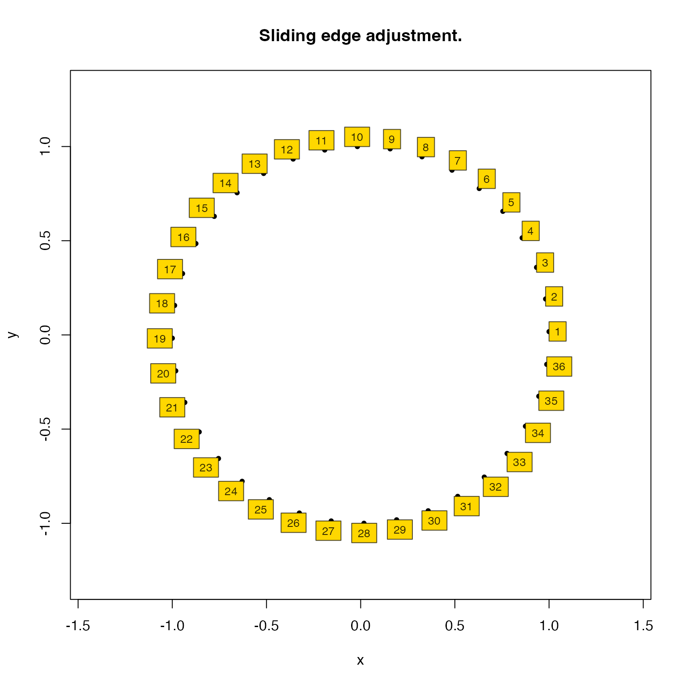
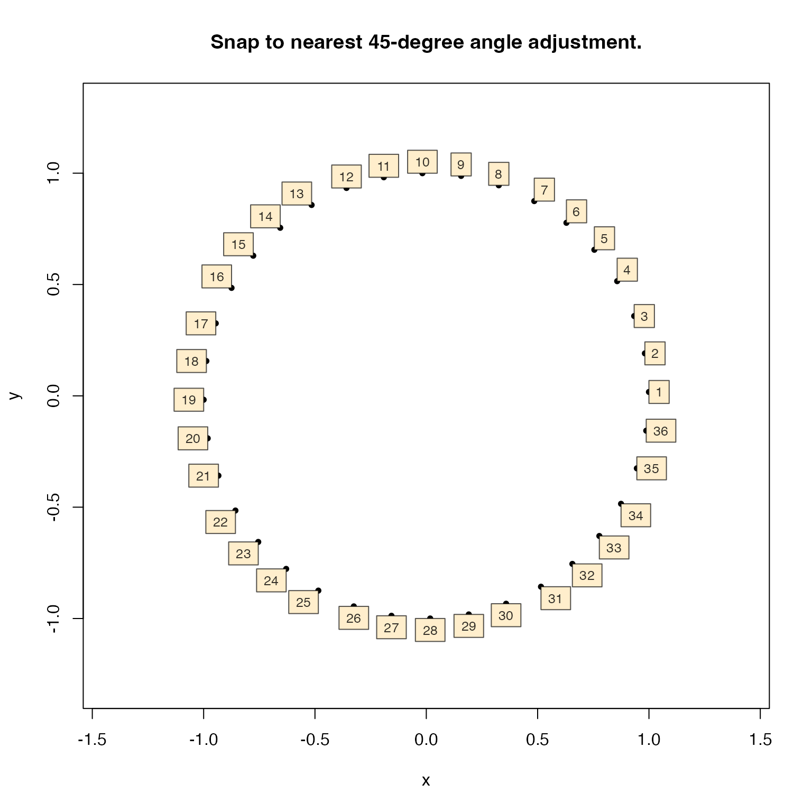
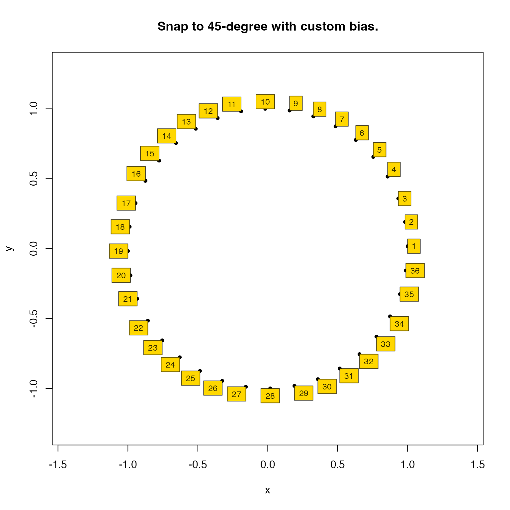
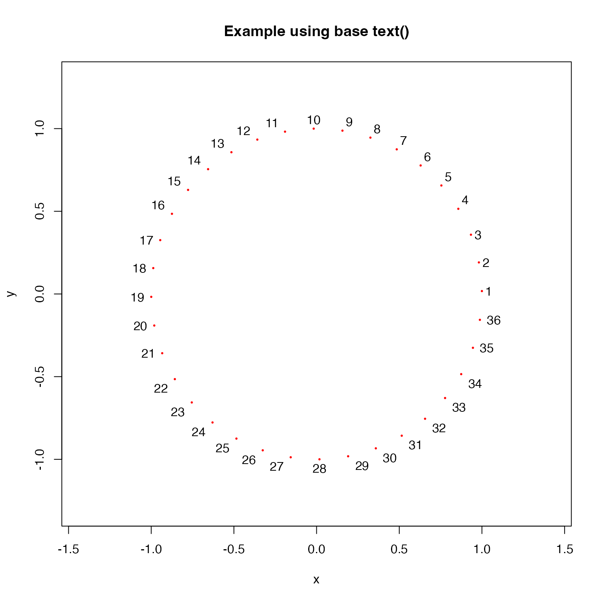

Degrees to text adjustment
Usage
degrees_to_adj(
degrees,
top = 90,
clockwise = FALSE,
expand = 0,
do_fractional = TRUE,
bias_side = 1,
bias_height = 1,
plot_ranges = FALSE,
...
)Arguments
- degrees
numericvalue for angles in degrees- top
numericvalue indicating the angle at the top position- clockwise
logicalindicating whether the angle increases in clockwise direction- expand
numericvalue intended to expand the adjust value. For exampleexpand=0.5will expand the adjust value 50%.- do_fractional
logicalwhether to adjust fractional values along the outer edge, default TRUE. When FALSE, it "snaps" the label to either a right angle, or exact 45-degree angle relative to the incoming line segment.- bias_height, bias_side
numericvalues used only whendo_fractional=FALSE, which expands the range of degree angles where a label is pushed to a 45-degree angle. For example, whenbias_side=2the range of degrees on the left and right side are more likely to result in labels with 45-degree adjustment.- plot_ranges
logicalwhether to plot a visual with the angular cutoffs which define the adjustment.- ...
additional arguments are ignored
Details
Utility function to define adj values suitable
for text plotting, which arranges text relative
to the angle in degrees.
See also
Other venndir geometry:
diff_degrees(),
display_angles(),
mean_degree_arc(),
mean_degrees(),
rescale_coordinates(),
spread_degrees(),
three_point_angle()
Examples
degrees <- seq(from=1, to=360, by=10);
x <- cos(jamba::deg2rad(degrees));
y <- sin(jamba::deg2rad(degrees));
adjdfF <- degrees_to_adj(degrees, do_fractional=TRUE);
plot(x, y,
main="Sliding edge adjustment.",
pch=20, asp=1,
xlim=c(-1.3, 1.3),
ylim=c(-1.3, 1.3));
jamba::drawLabels(txt=seq_along(degrees),
x=x, y=y, labelCex=0.8, boxColor="gold",
adjX=adjdfF[,1], adjY=adjdfF[,2])

adjdf1 <- degrees_to_adj(degrees, do_fractional=FALSE, bias_side=1);
plot(x, y,
main="Snap to nearest 45-degree angle adjustment.",
pch=20, asp=1,
xlim=c(-1.3, 1.3),
ylim=c(-1.3, 1.3));
jamba::drawLabels(txt=seq_along(degrees),
x=x, y=y, labelCex=0.8,
adjX=adjdf1[,1], adjY=adjdf1[,2])

adjdf <- degrees_to_adj(degrees, bias_side=3, do_fractional=FALSE);
plot(x, y,
main="Snap to 45-degree with custom bias.",
pch=20, asp=1,
xlim=c(-1.3, 1.3),
ylim=c(-1.3, 1.3));
jamba::drawLabels(txt=seq_along(degrees),
x=x, y=y, labelCex=0.8, boxColor="gold",
adjX=adjdf[,1], adjY=adjdf[,2])

adjdf <- degrees_to_adj(degrees, bias_side=3,
expand=c(1, 1), do_fractional=FALSE);
plot(x, y,
main="Example using base text()",
pch=20, asp=1, cex=0.4, col="red",
xlim=c(-1.3, 1.3),
ylim=c(-1.3, 1.3));
for (i in seq_along(degrees)) {
text(labels=i,
x=x[i], y=y[i],
adj=unlist(adjdf[i,]))
}
